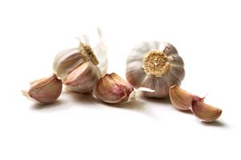

“If I were reduced to one medicinal herb it would be garlic,” says herb expert James Duke, Ph.D., who has spent years studying medicinal plants for the U.S. Department of Agriculture. As it turns out, he’s in good company.
Since antiquity, people worldwide have used garlic to prevent and combat a long list of infectious diseases, cancers, heart disease and other conditions. Hippocrates recommended the herb for infections, pneumonia, cancer, digestive problems and other maladies. Dioscorides, another ancient Greek physician, also employed garlic for “clearing the arteries.” Scientific research supports this advice; garlic does indeed enhance immune function, combat a long list of infectious microbes, pack some anti-cancer action, and protect the arteries from hardening and clogging.
However, some skepticism has surfaced over one of garlic’s most famous attributes. The humble bulb made headlines in February 2007 when a new study showed it did not appreciably lower cholesterol. The results were surprising: Early trials using garlic powder tablets (and some using aged garlic extracts) had shown modest reductions in blood cholesterol in adults with abnormally high levels. But after 1995, garlic powder tablets began failing to significantly reduce blood cholesterol. Further examination showed that the newer lots of garlic powder tablets didn’t yield enough allicin, the presumed active ingredient. Some experts also attributed negative results to volunteers with normal rather than elevated cholesterol levels. Others weren’t convinced the herb had much cholesterol-lowering impact.
This new and rigorous study, conducted at Stanford University Medical School by a group of garlic experts and published in the Archives of Internal Medicine, sought to resolve the debate. For a period of six months, 192 adults with moderately elevated low-density lipoprotein (LDL) cholesterol took either raw garlic (as a sandwich condiment), powdered garlic tablets (Nature’s Way Garlicin), aged garlic extract (Kyolic), or a dummy pill. The study results showed no statistically significant difference in cholesterol levels among the treatment groups.
Mark Blumenthal, the founder and executive director of the American Botanical Council and editor of their newsletter HerbalGram, emphasizes that garlic offers a host of other cardiovascular benefits, saying, “It would be a mistake to dismiss garlic as a healthy addition to diet simply based on the lack of documentation of LDL-cholesterol lowering effects.” An editorial in that same issue of the Archives of Internal Medicine echoed that opinion: “The results do not demonstrate that garlic has no usefulness in the prevention of cardiovascular disease.”
Previous studies showed that garlic inhibits oxidation of LDL cholesterol (oxidized LDL is what damages the blood vessels), reduces atherosclerotic plaque size, retards the deposition of calcium that hardens the arteries, mildly lowers blood pressure, hinders platelets from sticking together in a clot, and reduces homocysteine (an amino acid that raises cardiovascular disease and stroke risk).
The bottom line: Garlic has many health benefits, plus it’s cheap, readily available and an indispensable culinary herb. Duke takes his raw - one to two minced cloves added to his food each day (cooking deactivates the good stuff). Alternatively, you can take enteric-coated garlic powder pills or aged garlic extract.
|
 ISTOCKPHOTO/FLOORTJE Garlic has many health benefits, and tastes great too. |
|
|